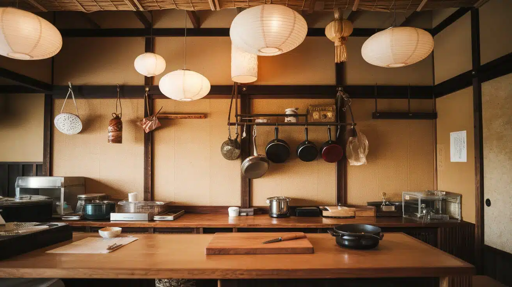

About Us
Traditional Japanese cooking with passion
Yoko's Kitchen was founded to share authentic Japanese recipes and culture with food lovers. We believe in fresh ingredients and tradition.

Yoko's Kitchen was founded to share authentic Japanese recipes and culture with food lovers. We believe in fresh ingredients and tradition.

We aim to teach, cook, and serve delicious Japanese meals while creating memorable experiences for every customer.